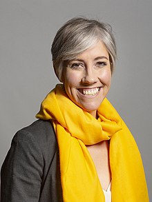

{kind=link}
Today, Monday May 8th is National Help-Out day -- which may well mean that by tomorrow, when this blogpost is published (March 9th 2023), everyone’s impulses to benevolence will be as exhausted as the final damp squib from a village playing-field party.
So maybe I’ll pitch this request as enlightened self-interest...
If you have a stroke today, or a traumatic brain injury, if
you develop a cognitive disability (such as a dementia) or any one of the array
of incurable illnesses which will make you progressively less and less able to
fend for yourself (old age and frailty included), would you like to be sure
that someone who loves you will be welcomed to come to you, whether you are in
hospital, care home, mental health unit or any of the other institutions of our
health and care system? When your spouse, partner, parent, child, dearest
friend or relative is unable to manage alone and leaves their home – perhaps
for ever – do you, in turn, want to know that you will reliably be welcomed to
come and reassure them, speak for them when they can no longer speak for themselves,
hold their hand until the end of time? If, tomorrow, you attend an appointment
where you may be told that your cancer is terminal or your baby dead in your
womb, will it seem appropriate that the room is filled with clinical
specialists while your husband or wife must wait in the car park?
Because these are actual situations that have happened, are
happening and will continue to happen – randomly - unless we now establish that
all of us have a right to be supported by someone we love when we most need
them.
That’s as long as they are willing and able to offer that
support.
Every day is a National Help Out day for family carers. The
money they save the state is worth more than the entire NHS budget. They are
the ultimate volunteers and should never be taken for granted – except by the
person they love and who loves them. The only duty on health and social care
institutions is to welcome them, support them, work with them and facilitate
their access, as appropriately and safely as any paid member of the clinical or
caring staff.
I’ve said this before, I know. There are three things which are different now.
1.
June 6th 2023 Westminster: a
meeting for MPs and the initial introduction of legislation
| Tracey Crouch MP attended the first Campaign Meeting in Portcullis House on 9.3.22 She said that she had arrived undecided and was convinced of the need for legislation 'within about 10 minutes' |
{kind=link}
It will apply to this unique category of essential ‘care
supporters’ or ‘care partners’. It’s not about general visiting arrangements. The
Government will have the chance to take it up and bring it into law. The
Opposition will have the chance to make it a manifesto pledge and bring it into
law - if they gain the power to do so. A Private Member with a place in the
parliamentary ballot can take it up and use any support generated by our
campaign among other MPs and peers to bring it into law. With your help, we believe it could
happen.
2.
Expert drafting for a new legal right
The legislation must be fit for purpose. Two experienced
lawyers, Carolin Ott from Leigh Day and Tom Gillie from Matrix Chambers have
been working, pro bono, to map a legislative pathway that would establish a
right for the individual to be supported by someone personal to them, with a
corresponding duty on the health and care institutions to facilitate this. Such
legislation needs to be robust and straightforward. It needs to dovetail with
existing law and not impose any additional cost on a system that is already
under strain. Tom is a specialist in equality & human rights, employment and public law,
including the law of political parties and Parliament. His involvement
may be a gamechanger.
3.
Involvement and constructive support from
Health and social care providers
Any legislation needs to be workable by the health and care
professionals who will be required to implement it. The third positive step –
another gamechanger? -- is that the Care Provider Association is taking an
active interest in understanding and discussing this. They represent an
impressive variety of different organisations involved in providing social
care. Many of their members are individually pledged to support the principle
of a legal right. Our campaign partners Rights for Residents and the Relatives
and Residents Association have now joined forces and are working with
tremendous energy and success to explain our shared aims to a wide range of
organisations and individuals who may choose to pledge their support.
I am personally proud to be part of the NHS Care Partner
Advisory Board, managed from the NHS England Nursing Directorate We have been
meeting monthly since July 2022 to develop a system-wide Care Partner policy which
will soon be available for stakeholder discussion. This is exciting and the
developing links between the NHS Care Partner Board and the Care Provider Association are exciting too.
People are helped to understand the importance of working together when they recognise that
in their private lives, many nurses and care-workers, doctors, nurse leaders
and social care senior managers have also been denied access to people they
love in their hour of need. The Right to Maintain Contact matters to us all.
 |
| Daisy Cooper was convinced of the need for a new legal right by listening to the experiences of her constituents |
{kind=link}
Why legislation is needed now
Separation and isolation still happens. Only a few weeks ago I was told of an
NHS doctor from one London hospital being removed – by security guards! – from
the elderly care ward of another London hospital where he had gone to check on
the condition of his 90-year-old father-in-law when the ward sister had ruled
that only certain patients could be visited. The Secretary of State for Health is
said to believe that ward sisters should have the power to make their own
access arrangements. I can’t agree.
For more than eight years Nicci Gerrard and I have been
working to establish the John’s Campaign principle that people living with
dementia or other cognitive impairments should have the right to support from
their family carers whenever they need it, if they are in hospital or other
institutional care and if the family carer is able and willing to offer this
support. We always assumed that goodwill, understanding (and some knowledge of
Equality law) together with human kindness would be sufficient to ensure this.
Often this has been true. We have met some truly wonderful people (many of them Johns Campaign Ambassadors) sticking to
their compassionate and ethical principles in the most difficult of
circumstances. But it has not been sufficient.
Public trust in both the NHS and social care is at an all-time low.
We cannot fix the staffing crisis, the underfunding, the low morale. Yet if this
law is passed we, the potential patients, residents or service users, in this
huge and often fragmented system – may begin to regain some confidence that wherever
we find ourselves in our time of need, the person who understands us best, who can
still bring joy and meaning in our lives, will be welcomed to be with us (if
they wish) for our sake and their own.
That’s why we need to go to Parliament again. Many people
can dish out guidance, write policies, make up ‘rules’ but it is the job of
elected MPs to make law. So, we need to let our MPs know what we would like
them to do. Please will you ask your MP to familiarise themselves with
the issues, get in touch with Dan Carden, Tracey Crouch, Daisy Cooper or Liz
Saville Roberts, attend the meeting on June 6th and give positive
support to legislation for the Right to Maintain Contact.
| Dan Carden MP and his mother were refused access to his terminally ill father because he was not 'actively dying' Dan is leading the Campaign for a legal right to maintain contact |
{kind=link}
They should do it because you ask them but they would be wise
to remember that they too may find themselves in hospital, care home or mental
health unit, in desperate need of the person they love. They too may come to understand
the equivalent need to be welcomed to offer such essential support. As Dan
Carden’s mother said, when she was denied access to her terminally ill husband
because he was not deemed to be ‘actively dying’.
“This meant that instead of being
able to focus on caring and supporting my husband through his final weeks, we
had to battle with the hospital to see him. The trauma of my husband’s
death—and in particular the neglect he experienced in his final weeks of
life—remain with me. It is almost exactly one year since Mike was admitted to
hospital, where he spent the last month of his life, and I am still overwhelmed
each time I attempt to talk about what he went through.” (quoted by Dan Carden MP Hansard 27.10.22)
Our Request
Please – for your own sake and the sake of those you love, contact
your MP and ask her/him to support this new legal right to maintain contact in health and care settings. No
one should be kidding themselves that they might never need this right. If you work in health or social care please
respond as an individual, thinking of those you love and those who love you. It’s
a legitimate reason to contact your MP and this is how you do it.
https://www.parliament.uk/get-involved/contact-an-mp-or-lord/contact-your-mp/
There are other steps you can take as an individual or an
organisation
https://www.relres.org/care-supporter-call
but for now, please send a message to your MP and ask
them to support this essential legal right.